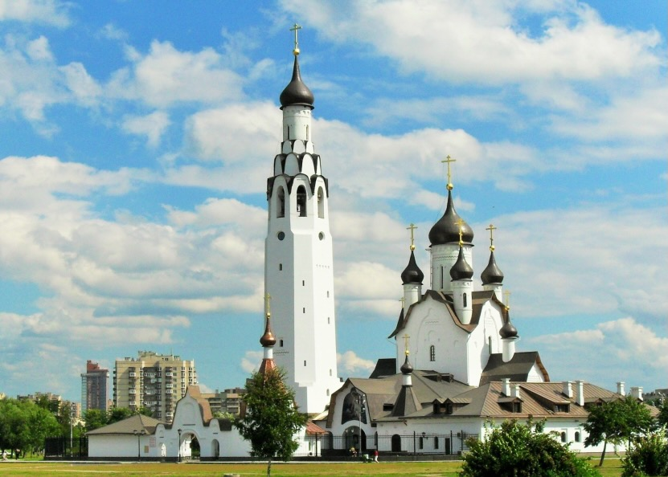

<!DOCTYPE html><html lang="en"><head><meta charset="utf-8"><meta name="viewport" content="width=device-width, initial-scale=1, shrink-to-fit=no"><meta name="description" content=""><meta name="author" content=""><meta name="msapplication-TileColor" content="#da532c"><meta name="theme-color" content="#ffffff"><title>Невское благочние</title><!-- Favicon--><link rel="apple-touch-icon" sizes="180x180" href="assets/favicon/apple-touch-icon.png"><link rel="icon" type="image/x-icon" href="assets/favicon/favicon.ico"><link rel="icon" type="image/png" sizes="32x32" href="assets/favicon/favicon-32x32.png"><link rel="icon" type="image/png" sizes="16x16" href="assets/favicon/favicon-16x16.png"><link rel="manifest" href="assets/favicon/site.webmanifest"><link rel="mask-icon" href="assets/favicon/safari-pinned-tab.svg" color="#5bbad5"><!-- Font Awesome icons (free version)--><link rel="stylesheet" href="https://site-assets.fontawesome.com/releases/v6.2.1/css/all.css"><link rel="stylesheet" href="https://site-assets.fontawesome.com/releases/v6.2.1/css/sharp-solid.css"><!-- Google fonts--><link href="https://fonts.googleapis.com" rel="preconnect"><link href="https://fonts.gstatic.com" rel="preconnect" crossorigin><link href="https://fonts.googleapis.com/css2?family=Oswald:wght@200;300;400;500;600;700&amp;display=swap" rel="stylesheet" type="text/css"><link href="https://fonts.googleapis.com/css?family=Roboto+Slab:400,100,300,700" rel="stylesheet" type="text/css"><!-- Core theme CSS (includes Bootstrap)--><link href="assets/css/styles.css" rel="stylesheet"></head></html><body id="page-top"><!-- Navigation --><div class="navbar navbar-expand-lg navbar-dark py-md-3" id="mainNav"><div class="container"> <div class="logo"> <a class="navbar-brand" href="/"> НЕВСКОЕ БЛАГОЧИНИЕ</a></div><div class="nav-burger"><button class="navbar-toggler" type="button" data-bs-toggle="offcanvas" data-bs-target="#offcanvasDarkNavbar" aria-controls="offcanvasDarkNavbar" aria-label="Toggle navigation"><span class="navbar-toggler-icon"></span></button></div><div class="offcanvas offcanvas-end offcanvas-size-sm" id="offcanvasDarkNavbar" tabindex="-1" aria-labelledby="offcanvasDarkNavbarLabel"><div class="offcanvas-header pb-0"><button class="btn-close btn-close-white" type="button" data-bs-dismiss="offcanvas" aria-label="Close"></button></div><div class="offcanvas-body pt-0 justify-content-end"><ul class="navbar-nav"><li class="nav-item"><a class="nav-link" href="/">О благочинии</a></li><li class="nav-item"><a class="nav-link" href="/list.html">Приходы</a></li><li class="nav-item"><a class="nav-link" href="/news.html">Новости</a></li><li class="nav-item"><a class="nav-link" href="#">Деятельность</a></li><li class="nav-item"><a class="nav-link" href="#">Благотворительность</a></li><li class="nav-item"><a class="nav-link" href="/#contacts">Контакты               </a></li></ul></div></div></div></div><section class="page-section" id="actions"><div class="container"><div class="text-center"><h3 class="section-subheading">Храм святого первоверховного апостола Петра в Веселом Поселке</h3></div><div class="row"> <div class="col-lg-6 mb-5"></div><div class="col-lg-6 px-5"><p><b>Адрес:</b> 193318, г.Санкт-Петербург, Невский район, Искровский пр. д.11</p><p> <b>Настоятель: </b> иерей Димитрий Малиновский</p><p> <b>Контакты:</b><br> Телефон: +7 812 442-81-68, <br>E-mail: mail@petrovhram.ru</p><p> <b>Сайт:</b><a href="https://petrovhram.ru/" target="_blunk"> petrovhram.ru</a><br><b>Социальные сети:   </b><a href="https://vk.com/club32199535" target="_blunk"> vk.com/club32199535</a><br><b>Глобус митрополии:   </b><a href="https://globus.aquaviva.ru/khram-sv-pervoverkh-ap-petra-v-veselom-poselke" target="_blunk"> globus.aquaviva.ru</a></p><p>Целью работы храма является объединение православных христиан района для совместной деятельности в области различных видов служения: молодежного, социального, миссионерского, а также катехизации. </p></div></div></div></section><!-- Map--><section class="map-section"><script src="https://api-maps.yandex.ru/services/constructor/1.0/js/?um=constructor%3Ad6232b8a6f3742ec3c72501949478395c205ac7aff323038e77b5b66b430e526&amp;amp;width=100%25&amp;amp;height=400&amp;amp;lang=ru_RU&amp;amp;scroll=true"> </script></section><!-- Footer--><footer id="contacts"><div class="footer-top py-5"><div class="container"><div class="row"><div class="col-md-6"><p><a class="fa-regular fa-envelope pe-1"></a>благочиния: <a href="mailto:mail@nevskoeblago.ru">mail@nevskoeblago.ru</a></p><p><a class="fa-regular fa-envelope pe-1"></a>по направлению образования:  <a href="mailto:education@nevskoeblago.ru">education@nevskoeblago.ru</a></p><p><a class="fa-regular fa-envelope pe-1"></a>по направлению соц.работы: <a href="mailto:social@nevskoeblago.ru">social@nevskoeblago.ru                      </a></p></div><div class="col-md-6"><p><a class="fa-brands fa-vk pe-2 fs-4"></a>благочиния: <a href="https://vk.com/nevskblagspb" target="_blunk">https://vk.com/nevskblagspb</a></p><p><a class="fa-brands fa-vk pe-2 fs-4"></a>социального служения: <a href="https://vk.com/socialnevskoeblago" target="_blunk">https://vk.com/socialnevskoeblago</a></p><p><a class="fa-brands fa-vk pe-2 fs-4"></a>молодёжи и миссионерское служение: <a href="https://vk.com/nevamolodaya" target="_blunk">https://vk.com/nevamolodaya</a></p></div></div></div></div><div class="footer-bottom col-lg-12"><div class="container"><div class="row"><div class="col-md-4 text-md-start">&copy; 2024 Невское благочиние</div><div class="col-md-8 text-md-end">Разработка сайта <a class="text-decoration-none" href="#!" target="_blunk">Прохор Ефимов</a></div></div></div></div></footer><!-- Bootstrap core JS--><script src="https://cdnjs.cloudflare.com/ajax/libs/core-js/3.18.1/minified.js"></script><!-- Bootstrap core JS--><script src="https://cdn.jsdelivr.net/npm/bootstrap@5.1.3/dist/js/bootstrap.bundle.min.js"></script><!-- Core theme JS--><script src="assets/js/app.js"></script><!-- * * * * * * * * * * * * * * * * * * * * * * * * * * * * * * * * * * * * * * * *--><!-- * *                               SB Forms JS                               * *--><!-- * * Activate your form at https://startbootstrap.com/solution/contact-forms * *--><!-- * * * * * * * * * * * * * * * * * * * * * * * * * * * * * * * * * * * * * * * *--><script src="assets/js/sb-forms.js"></script></body>